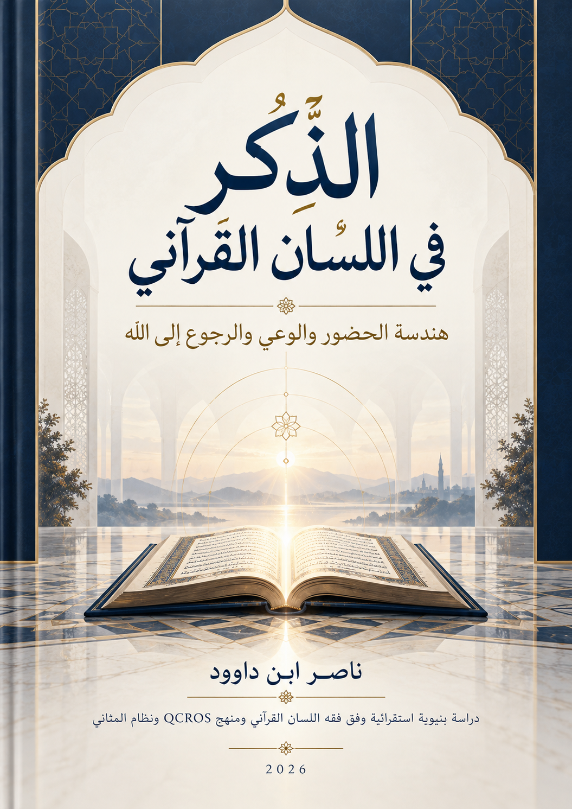

123. الذِّكْر في اللسان القرآني — هندسة الحضور والوعي والرجوع إلى الله

نسخة بحثية خاضعة للمراجعة العلمية النهائية قبل الإتاحة العامة وفق تنبيه المصدر. تستقرئ استعمالات الذكر والوحي والتذكير والصلاة وآثار التذكر، مع إبقاء الفرضيات البنيوية والحالات المفتوحة معلنة. الإنجليزية تكييف مفاهيمي مختصر مرشح للمراجعة.
النسخة الإنجليزية مختصرة ومفاهيمية، وليست ترجمة حرفية كاملة؛ يبقى النص العربي المرجع الأساسي للتفصيل والإحالات. تنبيه الحالة: يصرح المصدر بأن المراجعة العلمية النهائية قبل الإتاحة العامة ما تزال مطلوبة؛ ليست طبعة محققة نهائية.
قراءة PDF داخل الموقع / Read the PDF on this website
جارٍ تجهيز القارئ… / Preparing the reader…
ملخص الكتاب وفهرسه الموضوعي (مقتطف نصي للفهرسة والبحث)
الذِّكْرُ في اللسان القرآني
هندسة الحضور والوعي والرجوع إلى الله
دراسة بنيوية استقرائية في ضوء فقه اللسان القرآني ومنهج QCROS ونظام المثاني
ناصر ابن داوود
الطبعة العربية الرقمية — إصدار النشر التحريري | 2026
دراسة بنيوية استقرائية في الذِّكر، تتميز باكتمال إعدادها الرقمي مع بقاء حالات البحث والاختبار معلنةً للقارئ. تضم هذه الطبعة الرقمية الأبواب الستة والخاتمة والملاحق والتحقيق الإضافي لآل عمران: 7. تُعرض دعوى «يُعَلِّمُ» احتمالًا تحليليًا مفتوحًا، لا قراءة قرآنية مثبتة؛ وتخضع الطبعة للمراجعة العلمية النهائية قبل الإتاحة العامة.
1 ملخص الكتاب
لا يقدم هذا الكتاب تعريفًا تعبديًا مختصرًا للذكر، بل يستقرأ عائلة من الاستعمالات القرآنية: الذكر المنزل، وذكر الإنسان لربه، وذكر الله لعباده، والتذكير الموجّه، والذكر المتصل بالشرف والمكانة. يختلف السياق والإسناد والصيغة؛ ولا يجوز إجبار جميع الموارد على شرح واحد.
يجري الكتاب من تأسيس المدونة والصيغ إلى هوية الوحي المنزل وفاعلية الذاكر والمذكور، ثم إلى الذكر في الصلاة وآثاره الوجدانية، وعوائق التذكر وحدود مسؤولية المذكر، وصولًا إلى المسؤولية العملية والعدل والعمران بوصفها مجال اختبار للقيم لا معاني معجمية للجذر.
يراعي البحث اختلاف طبقات الدليل: النص القرآني الصريح؛ والملاحظة النحوية والسياقية؛ وقراءة المفسر القابلة للفحص؛ والفرضية البنيوية؛ والنموذج التشغيلي. وتُحفظ الموارد المقاومة والحالات المفتوحة في ملاحق مستقلة؛ ولا تصبح النتيجة مغلقة بمجرد نقلها من مسودة بحثية إلى المخطوطة الموحدة.
ملاحظة ضبط الإحصاء: يورد فهرس Quranic Arabic Corpus مجموع 292 إصابة للجذر (ذ ك ر) موزعة على 14 مدخلًا صرفيًا؛ وأرقام الآيات الفريدة والسور، والتصنيف الدلالي الشامل، تظل بحاجة إلى ملف جرد قابل لإعادة الحساب قبل اعتمادها نهائيًا.
تنبيه المصدر: اعتمدت الدراسة بعض المواد البحثية السابقة، ومنها تفريغ بعنوان «ما هو ذكر الله؟» لا يثبت من نسخته المفحوصة اسم صاحبه؛ وقد فُصل مضمون هذا النص عن أقوال المؤلف وعن الأدلة القرآنية.
2 كيف يقرأ القارئ هذا الكتاب؟
اقرأ (READ — اقرأ) ← اجمع (COLLECT — اجمع) ← قارن (COMPARE — قارن) ← افترض (HYPOTHESIZE — افترض) ← اختبر (TEST — اختبر) ← احكم على الحالة (JUDGE STATUS — قيّم الحالة) ← واصل (CONTINUE — واصل). ينبغي للقارئ أن يفرق بين نتيجة نصية في آية معينة وقانون مزعوم على مستوى جذر كامل.
3 الفهرس العام
4 الدستور المنهجي الموحّد
القرآن هو المدونة النصية الحاكمة (Corpus — المدونة). لا تستمد فرضية صحةَ نسبتها إلى القرآن من ورودها في كتاب سابق أو من اتساقها البلاغي. وتجري QCROS في سلسلة: النص ← الملاحظة ← الاستقراء ← العلاقات ← الفرضية ← الاختبار ← الحالة العلمية ← القانون أو النموذج.
التجاور لا يثبت السببية، ولا التكرار يثبت الترادف، ولا ترتيب العرض يفرض مرحلة زمنية. المثاني أداة اكتشاف واختبار؛ وتقطيع الحروف أو الثنائيات يولد فرضيات لا أدلة صرفية قائمة بنفسها. لا يخرج البحث من حدود الآية دون أن يوثّق جسرًا استدلاليًا مستقلاً.
مخطط 1 — منهج QCROS ومسار الاستقراء
مخطط منهجي يوضح الانتقال من المدونة إلى الاختبار والحالة العلمية؛ لا تُرفع الفرضية إلى قانون قبل اجتياز الاختبار.
النتائج تحمل حالات معرفية: OBSERVED (ملاحظة نصية)، SUPPORTED (مدعوم في نطاق معين)، CANDIDATE (مرشح)، OPEN (مفتوح)، MODEL (نموذج)، REJECTED (مرفوض بالدليل)، CLOSED (مغلق بعد اختبار كافٍ). لا تتحول العبارة إلى قانون برفع نبرتها أو تكرارها.
يمنع اتخاذ تأويل معين وسيلة للحكم على إيمان إنسان أو غيبية مصدر أفكاره، وتُسجل تباينات التراث التفسيري حين تكون حاسمة في فهم مورد ما؛ ومن ذلك العنكبوت: 45 وتعدد أوجه «ولذكر الله أكبر».
4.1 أولوية المدونة القرآنية وحدود الاستئناس بالمرويات
الحالة: METHODOLOGICAL CHARTER ADOPTED — دستور منهجي معتمد في إدارة البحث؛ أما التأويلات المستنبطة من آيات المرجعية فتظل قضايا علمية منفصلة تحتاج إلى اختبار. مصدر المبادئ: نص المؤلف المضاف إلى مشروع كتاب الذِّكر بتاريخ 15 أكتوبر 2026.
4.1.1 الضوابط الأربعة للقراءة والاحتجاج
الأول — القرآن هو الدليل التأسيسي: تُستخرج دلالة المصطلح من مجموع الآيات وسياقاتها وعلاقاتها ومقابلاتها الداخلية، وتُفصل الملاحظة الصريحة عن الفرضية الدلالية.
الثاني — المرويات للاستئناس والفحص: تُعامل بوصفها نصوصًا وصلت بالنقل والتدوين البشري، ويُفصل في كل رواية بين: (أ) ثبوت نسبتها تاريخيًا، (ب) توافق مضمونها مع القرآن في القضية المدروسة، (ج) صحة الاستنباط الذي يُراد بناؤه عليها. لا يلزم من صحة النقل صحة التفسير أو من موافقة المعنى صحة النسبة.
الثالث — لسان القرآن معيار التحليل: لا يُنقل معنى لفظٍ من رواية أو معجم إلى جميع الاستعمالات القرآنية لمجرد تشابه اللفظ؛ بل يراجع الشكل الصرفي، والفاعل والمفعول، والقرائن، والتوزيع والمثاني والموارد المقاومة. المعجم وكتاب التفسير شاهدان مساعدان لا حاكمان على Corpus.
الرابع — التدبر اختبار قابل للمراجعة: حصر الموارد ← فحص السياق ← مقارنة النظائر ← بناء علاقة/فرضية ← اختبار عكسي ← تقرير حالة علمية مقيّدة بالمدونة. لا ترفع النتيجة إلى CLOSED لمجرد قناعة القارئ أو شيوعها في الموروث، ولا تُستعمل للحكم على بواطن الأشخاص.
القيد التأسيسي: «القرآن يفسر أولًا بالقرآن» أولوية استدلال منهجية مقررة للكتاب، وليس ادعاء بأن فهم الإنسان لأي آية يصبح معصومًا أو بأن آية منفردة تكفي لنفي جميع الأوجه الأخرى. النص القرآني ≠ فهم الباحث للنص، والمرويات ≠ النص، وغياب إثباتٍ من القرآن ≠ إثباتُ نفيٍ تاريخي مطلق.
4.1.2 القرار التحريري في ترتيب مقدّمات الأبواب
استعيض عن تكرار المقدمات العامة داخل الأبواب بهذه المقدمة المنهجية، مع الإبقاء على مداخل الأبواب حين تضيف سؤالًا نصيًا مخصوصًا. ولم تُلغَ الجداول الأصلية؛ نُقلت نسخها إلى ملاحق التحليل بحسب مصدر كل باب، حتى يُحتفظ بإمكان المراجعة.
5 الباب الأول — تأسيس المدونة والتمييز اللساني
5.1.1 ميزان تحرير الباب
في هذا الباب نؤسس تعدد مجالات الجذر قبل اختبار أي تعريف شامل؛ الأرقام الصرفية الواردة في النص القديم تظل محل مراجعة مستقلة.
5.1.2 مدخل الباب: من تعدد الموارد القرآنية إلى ضبط الجذر الصرفي
لا يبدأ هذا الباب من تعريف معجمي واحد جاهز يُحمَل عليه القرآنُ قسرًا، بل ينطلق من استقراء الوقائع النصية كما وردت في المدونة الحاكمة (Corpus). فالقارئ الذي يدخل إلى القرآن الكريم وفي ذهنه تصورٌ أحادي للذكر — سواء أكان ذلك التصورُ محصورًا في «حركة اللسان بالتسبيح والتكرار»، أم كان محصورًا في «النتيجة العقلية المستخلصة من التدبر» — سيصطدم منذ السور الأولى بموارد قرآنية تأبى الانحباس في هذا القالب الضيق. من هنا، تتأسس مهمة هذا الباب في بسط الخريطة الكاملة لمسارات الجذر (ذ ك ر)، وإثبات إحصائه الصرفي، وتحرير الفروق اللسانية بين مشتقاته، قبل الانتقال إلى هندسة البيان والفاعلية في الأبواب اللاحقة.